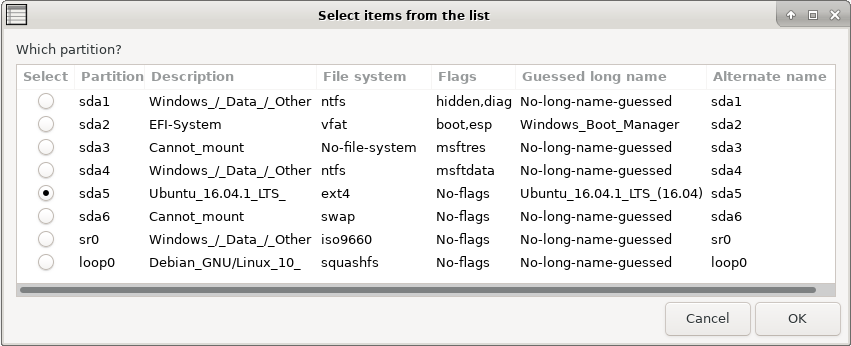

Choose your language.
File System Check (Forced Fix) - Rescapp - Documentation
Sometimes there might be a power outage and your computer is halted suddenly.
This might have a filesystem inconsistency as a result which, in turn, might make Grub unable to find your kernel and initrd files (which are files needed to boot) or even its own files.
One of the multiple messages you can see when there is a filesystem inconsistency is:
grub rescue> .
This option lets you fix the filesystem inconsistency so that you can boot again in your system. It's also recommended that you update your grub configuration (Update Grub menus option) and reinstall grub (Restore grub option) if this fileystem inconsistency fix is not enough.
-
Step 1Rescapp searches for all the partitions on your sytem.
-
Step 2Rescapp displays a list of the partitions found previously.You are prompted:
Which partition? You are supposed to choose whatever partition you want to force the filesystem check on and press the OK button.Explanation of Description column is:
-
Distribution name: Your distribution root partition has been detected and you are seeing its name.
-
Not detected: The partition can be mounted but there is not an /etc/issue file on it. It is probably a non root partition.
-
Cannot_mount:: The partition cannot be mounted. Maybe it is the partition you want to fix, another one that Rescatux cannot mount, or maybe a SWAP partition.

-
Step 3You are informed about the fsck process.You either get:
 [SUCCESS] Filesystem check with automatic fix was OK! :)
[SUCCESS] Filesystem check with automatic fix was OK! :)
or
 [ERROR] Filesystem check with automatic fix failed! :(
[ERROR] Filesystem check with automatic fix failed! :(